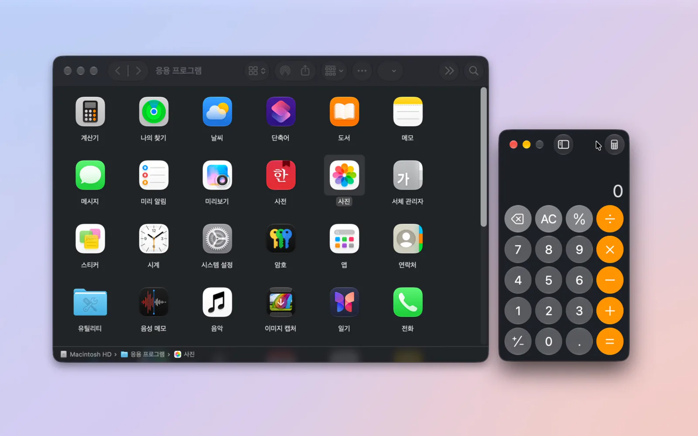
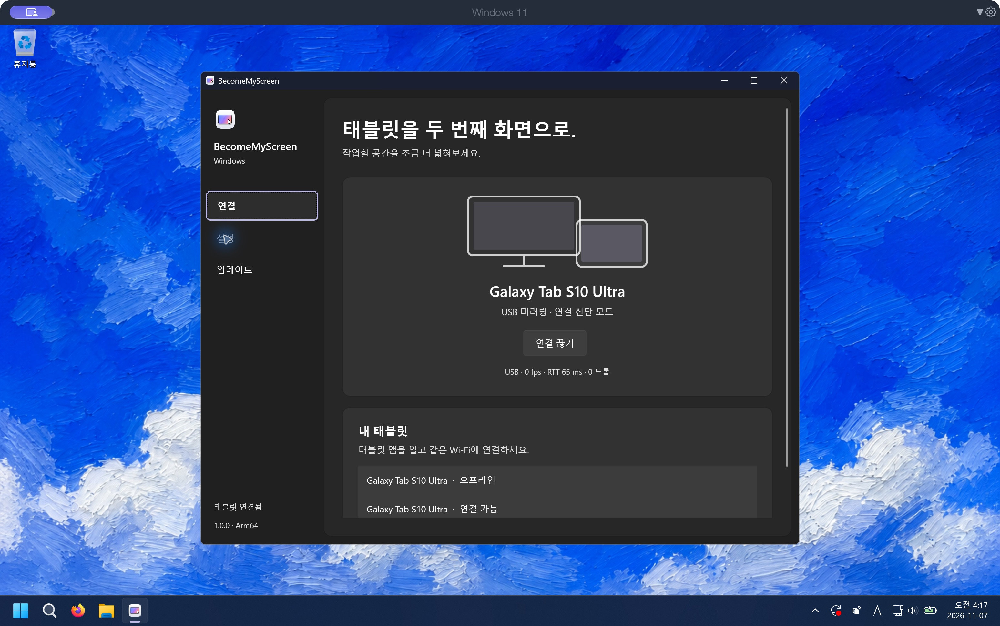
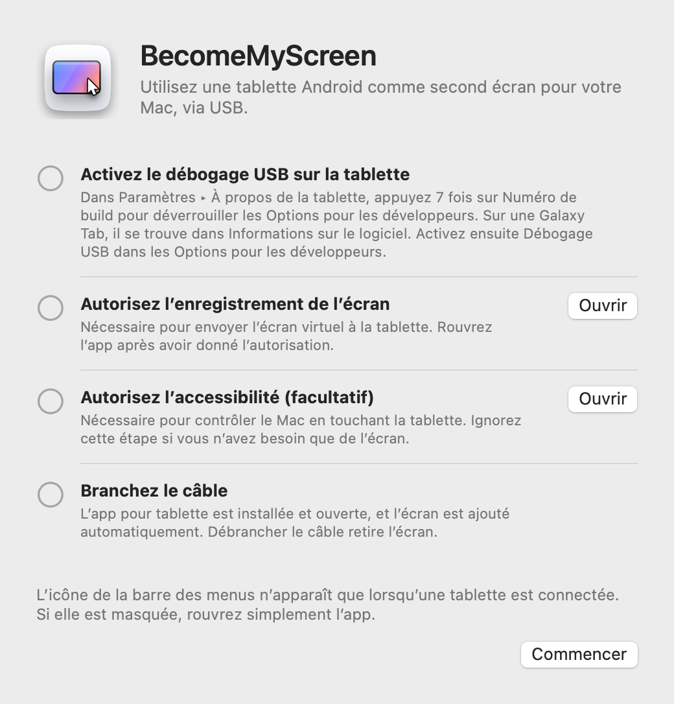
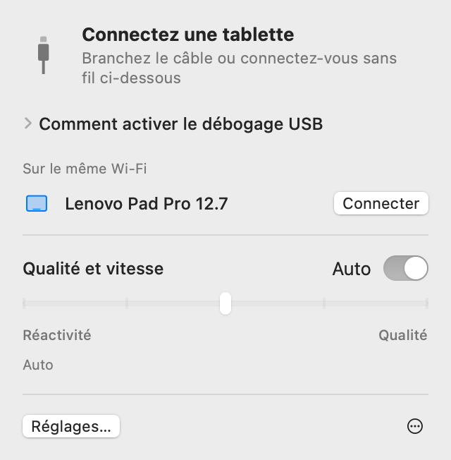
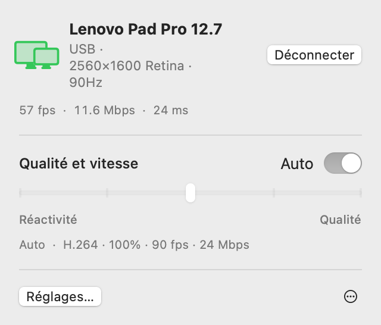
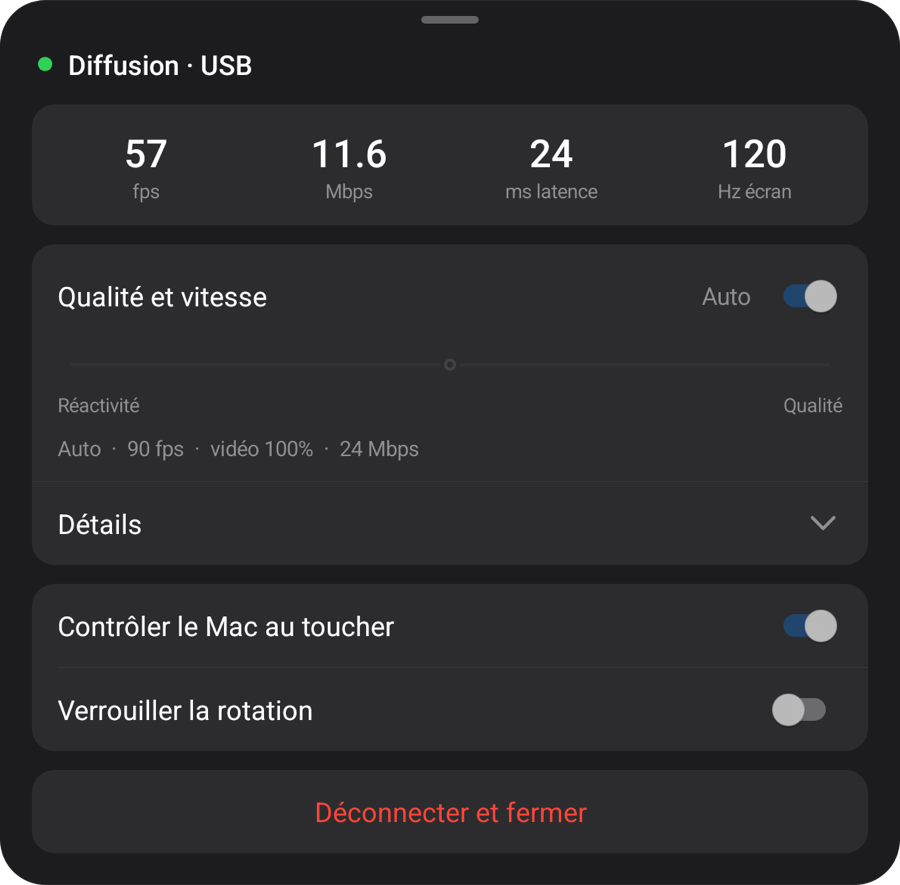
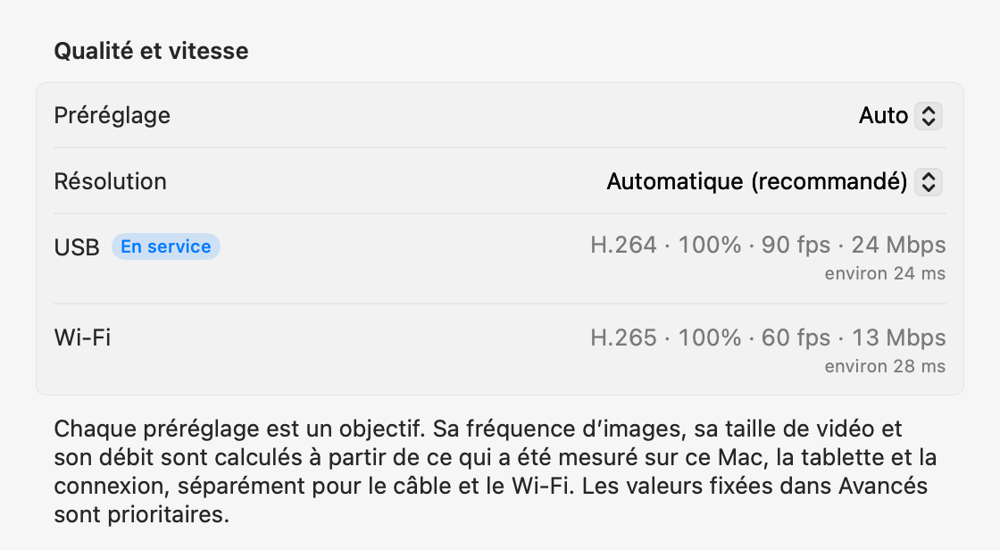

macOS + Windows
Votre tablette.
L’écran de votre ordinateur.
Votre tablette Android devient un deuxième écran pour Mac ou Windows. Connectez-la en USB pour installer et ouvrir automatiquement l’application.
Ouvrez le fichier zip, déplacez l’app dans le dossier Applications et ouvrez-la. Pour la première connexion, consultez Configuration.
Ouvrez cette page sur votre ordinateur pour télécharger l’app Mac ou Windows.

1.1.0
Windows
Disponible sur Windows 11. Apps natives Intel/AMD x64 et ARM64 dans un seul téléchargement.

Lancez le programme d’installation, branchez la tablette et autorisez le débogage USB. Le moteur vidéo se télécharge au premier lancement.
Les mesures ci-dessous ont été réalisées sur Mac.
Configuration
La configuration ne se fait qu’une fois. Ensuite, brancher le câble ajoute l’écran, et sur le même Wi‑Fi la connexion se fait sans câble.
-
Installez l’app Mac
Ouvrez le fichier zip téléchargé, déplacez BecomeMyScreen dans le dossier Applications et ouvrez-le. Autorisez l’enregistrement de l’écran, puis ouvrez l’app une nouvelle fois.
-
Activez le débogage USB sur la tablette
Dans Paramètres › À propos de la tablette, appuyez sept fois sur Numéro de build pour déverrouiller les Options pour les développeurs. Sur une Galaxy Tab, il se trouve dans Informations sur le logiciel. Activez ensuite Débogage USB dans les Options pour les développeurs.
-
Branchez le câble
Lorsque la tablette demande s’il faut autoriser le débogage USB, cochez « Toujours autoriser sur cet ordinateur » et appuyez sur Autoriser. Le Mac installe et ouvre l’app pour tablette, puis ajoute l’écran. Il n’y a pas d’app pour tablette à télécharger séparément.

Vitesse
Le temps écoulé entre le moment où le Mac capture l’écran et celui où la tablette l’affiche. Mesuré avec une Lenovo Pad Pro 12.7 et un Mac M4 Pro.
| Taille de la vidéo | 60 fps | 120 fps |
|---|---|---|
| 100%2560×1600 | 20 ms | 24 ms |
| 75%1920×1200 | 14 ms | 19 ms |
| 50%1280×800 | 11 ms | 16 ms |
L’encodeur matériel de la puce Apple compresse l’écran en H.264 et l’envoie via USB, et le décodeur matériel de la tablette affiche chaque image dès son arrivée. À la première connexion, Auto mesure ce que le décodeur peut gérer et choisit la fréquence d’images la plus élevée qui ne prend pas de retard. Sur cette tablette, il a choisi 90 fps.
Méthode de mesure : après correction de l’écart entre les horloges des deux appareils, nous avons mesuré le temps entre la capture d’une image par le Mac et l’affichage de cette même image par la tablette.
Sans fil
Une tablette connectée une fois via USB fonctionne aussi sans fil sur le même Wi‑Fi. Débranchez le câble pendant que vous travaillez, et l’affichage continue via Wi‑Fi.
- Connexion
- Ouvrez l’app sur la tablette : elle apparaît dans la liste « Sur le même Wi‑Fi » de la barre des menus du Mac. Cliquez sur Connecter et l’écran s’affiche.
- Débranchement
- Le passage au Wi‑Fi se fait en moins d’une seconde. L’écran virtuel et la disposition de vos fenêtres restent inchangés, et rebrancher le câble repasse en USB.
- Sécurité
- La clé des connexions sans fil n’est jamais échangée autrement que par le câble USB. Une connexion n’est établie qu’après vérification de la clé, et l’écran comme les saisies sont entièrement chiffrés en AES-256-GCM.
- Cadence adaptative
- La tablette confirme chaque image reçue, et le Mac saute autant d’images qu’il a pris de retard et ajuste le débit. Même si le Wi‑Fi ralentit un instant, le retard ne s’accumule pas.

| Connexion | Latence | Remarques |
|---|---|---|
| USB | Environ 20–25 ms | La fréquence d’images maximale de la tablette |
| Wi‑Fi 5 GHz | 40 à 55 ms | 60 fps ; le débit augmente automatiquement jusqu’au réglage de qualité |
| Wi‑Fi 2.4 GHz | 40 à 65 ms | La latence dépasse parfois 100 ms, ce qui peut donner des saccades |
Mesuré avec une Lenovo Pad Pro 12.7 en 2560×1600 avec un contenu qui change en permanence. Si la tablette est en Wi‑Fi 2,4 GHz, l’app propose de passer en 5 GHz.
Qualité et réactivité
Choisissez l’un des cinq niveaux ou laissez Auto. Modifiez-le depuis la barre des menus du Mac ou depuis le menu de la tablette : les deux côtés changent ensemble.
| Préréglage | Fréquence d’images | Taille de la vidéo | Débit |
|---|---|---|---|
| Auto | 90 fps | 100% | 24 Mbps |
| 1Réactivité maximale | 120 fps | 50% | 8 Mbps |
| 2Haute réactivité | 120 fps | 75% | 14 Mbps |
| 3Équilibré | 90 fps | 100% | 24 Mbps |
| 4Haute qualité | 90 fps | 100% | 33 Mbps |
| 5Qualité maximale | 60 fps | 100% | 39 Mbps |
Mesuré avec une Lenovo Pad Pro 12.7 (2560×1600, 120 Hz) connectée via USB à un Mac M4 Pro. Chaque préréglage est un objectif : sur un autre Mac ou une autre tablette, et en Wi‑Fi, il calcule ses propres valeurs à partir de ce qui a été mesuré. Auto équivaut à Équilibré.
La taille de la vidéo se règle indépendamment de la résolution vue par le Mac. Une vidéo plus petite remplit quand même l’écran de la tablette, et elle allège la charge du décodeur et réduit la latence d’autant.
À la première connexion, l’app mesure le câble, l’encodeur vidéo de ce Mac et le décodeur de la tablette dans chacun de ses modes, en 10 secondes environ ; la première fois en Wi‑Fi, elle mesure le réseau. Chaque préréglage s’adapte à ces chiffres, séparément pour le câble et le Wi‑Fi, et dans les réglages Avancés, vous pouvez fixer n’importe quelle valeur pour chaque connexion. Si le câble est lent, l’app vous invite à le remplacer.



Tactile
Touchez la tablette et le Mac le reçoit comme une saisie de souris. Cette fonction s’active dès que vous autorisez l’accessibilité sur le Mac.
| Sur la tablette | Sur le Mac |
|---|---|
| Toucher | Clic |
| Faire glisser | Glisser |
| Faire glisser deux doigts | Défilement |
| Toucher avec deux doigts | Clic droit |
| Toucher avec trois doigts | Ouvre le menu de la tablette |
| Dessiner avec un stylet | Arrive sur le Mac comme une saisie de tablette graphique, avec pression et inclinaison |
| Survoler l’écran avec un stylet ou une souris | Déplace le pointeur. Touchez en maintenant le bouton du stylet pour faire un clic droit |
Un pointeur qui revient à sa place
Lorsque vous touchez la tablette, le pointeur du Mac se déplace à cet endroit. Bougez ensuite un peu la souris et le pointeur revient là où il était avant le toucher : inutile de le ramener vers ce que vous faisiez sur l’écran principal. Vous pouvez désactiver cette option dans Réglages.
Détails
- Icône de la barre des menus
-
Elle ne s’affiche que lorsqu’une tablette est connectée. Si elle est masquée, rouvrez l’app : elle apparaît un instant avec son panneau ouvert.
- En attente
- Préparation
- En service
- Action requise
- Ouverture de l’app pour tablette
- Si l’app pour tablette n’est pas ouverte lorsque vous branchez le câble, le Mac l’ouvre et réactive l’écran s’il est éteint. L’écran de verrouillage n’est jamais contourné.
- Mises à jour
- L’app pour Mac recherche les nouvelles versions et se met à jour quand vous le décidez. Si elle apporte une app pour tablette plus récente, la tablette est mise à jour par le câble avant que l’écran ne démarre.
- Portrait
- Tournez la tablette en mode portrait et l’écran virtuel est lui aussi recréé en portrait.
- Fréquence de rafraîchissement et mise en veille de l’écran
- Pendant la diffusion, la fréquence de rafraîchissement de la tablette est maintenue pour ne pas descendre à 60 Hz, et l’écran ne s’éteint pas.
- Vérification du câble
- Si l’USB se connecte à moins de 480 Mbps, si les transferts restent sous 8 MB/s ou si la connexion est coupée trois fois en trois minutes, l’app suggère d’essayer un autre câble ou un autre port.
- En cas de coupure
- Si le câble se débranche, l’affichage continue via Wi‑Fi. S’il ne peut pas continuer sans fil, l’écran virtuel est conservé un court instant, et si la tablette se reconnecte entre-temps, la disposition de vos fenêtres reste telle quelle.
- Déconnecter et Reconnecter
- Cliquez sur Déconnecter dans la barre des menus et l’écran de la tablette est mis de côté, même avec le câble branché. Cliquez sur Reconnecter pour reprendre.
- L’app pour tablette se ferme d’elle-même
- Lorsque rien n’est branché à la tablette, pas même un chargeur, l’app pour tablette se ferme d’elle-même au bout de 10 secondes. Si elle peut plutôt attendre une connexion sans fil, elle attend 2 minutes.
Configuration requise
- Mac
- Mac avec puce Apple, macOS 14 ou version ultérieure
- Windows
- Windows 11 · Intel / AMD x64 · ARM64 · Windows
- Tablette
- Android 8.0 ou version ultérieure, sur un appareil où le débogage USB peut être activé
- Câble
- Un câble USB qui prend en charge le transfert de données. Les câbles de recharge uniquement ne se connectent pas. Un port du Mac lui-même est plus fiable qu’un concentrateur.
- Sans fil
- Le Mac et la tablette doivent être sur le même Wi‑Fi ; le 5 GHz est recommandé. La première connexion doit se faire via USB.
- Autorisations sur le Mac
- Enregistrement de l’écran. Également Accessibilité pour contrôler le Mac au toucher, et Réseau local pour l’utiliser sans fil.
Questions fréquentes
Windows
Si Windows ARM64 bloque le pilote, utilisez Start-Mirroring.cmd dans le ZIP pour dupliquer l’écran. Notes de version et limites connues
Faut-il installer une app sur la tablette ?
Non. L’app pour tablette est incluse dans l’app Mac : lorsque vous branchez le câble, le Mac l’installe et l’ouvre. Lorsque vous mettez à jour l’app Mac, l’app pour tablette est mise à jour en même temps à la connexion suivante.
Peut-on l’utiliser en Wi‑Fi ?
Oui. Après une première connexion via USB, la tablette se connecte ensuite sans fil sur le même Wi‑Fi. Ouvrez l’app sur la tablette et cliquez sur Connecter dans la barre des menus du Mac, ou débranchez simplement le câble en cours d’utilisation. La latence est un peu plus élevée qu’en USB (40 à 55 ms en 5 GHz), et le Wi‑Fi 2,4 GHz peut saccader de temps en temps : le 5 GHz est donc recommandé.
Pourquoi la première connexion doit-elle se faire via USB ?
Parce que la clé des connexions sans fil n’est échangée que par le câble. Ainsi, aucun autre appareil sur le même Wi‑Fi ne peut se faire passer pour votre tablette et se connecter à votre Mac. L’app pour tablette est également installée à ce moment-là.
La pression du stylet est-elle prise en charge ?
Oui. La pression et l’inclinaison du stylet parviennent à macOS comme une saisie de tablette graphique (pression, inclinaison et proximité). L’app utilise la saisie au stylet standard d’Android : le S Pen et les stylets Lenovo ne nécessitent ni SDK ni pilote supplémentaire. Testé avec le stylet de la Lenovo Pad Pro 12.7.
Quelles tablettes sont compatibles ?
Toute tablette sous Android 8.0 ou version ultérieure sur laquelle le débogage USB peut être activé. Le développement et les mesures ont été réalisés sur une Lenovo Pad Pro 12.7 (2944×1840, 120 Hz) ; les autres appareils n’ont pas encore été testés directement. La résolution et l’orientation de l’écran virtuel suivent l’écran de la tablette au moment de la connexion.
Pourquoi l’app n’est-elle pas sur l’App Store ?
La création de l’écran virtuel repose sur une fonctionnalité privée de macOS : l’app ne peut donc pas être publiée sur l’App Store. Elle est en revanche signée avec un certificat de développeur Apple et notarisée par Apple, si bien qu’elle s’ouvre dès son téléchargement.
Pourquoi les autorisations Enregistrement de l’écran et Accessibilité sont-elles nécessaires ?
Enregistrement de l’écran capture l’écran virtuel pour l’envoyer à la tablette, Accessibilité transforme les touchers et le stylet de la tablette en saisies sur le Mac, et Réseau local trouve les tablettes sur le même Wi‑Fi. L’écran ne transite que par le câble USB ou au sein de votre Wi‑Fi (chiffré en sans fil), et ne passe jamais par Internet.
La connexion se coupe sans arrêt.
Essayez un autre câble qui prend en charge le transfert de données, ou branchez-le directement sur un port du Mac plutôt que sur un concentrateur. L’app vous prévient d’abord lorsque l’USB se connecte lentement ou se coupe souvent. Après une brève coupure, l’écran virtuel est conservé 15 secondes et reprend là où il s’était arrêté.
Et si la tablette est verrouillée ?
Le Mac réactive l’écran et ouvre l’app, mais ne contourne jamais le verrouillage. Déverrouillez-la avec votre code PIN ou votre schéma, et la connexion s’établit aussitôt.
Peut-on l’utiliser sur un Mac Intel ?
La version actuelle est réservée aux Mac avec puce Apple.
Télécharger
BecomeMyScreen 1.2.0
Ouvrez cette page sur votre ordinateur pour télécharger l’app Mac ou Windows.
Ouvrez le fichier zip, déplacez l’app dans le dossier Applications et ouvrez-la. Pour la première connexion, consultez Configuration.
Windows